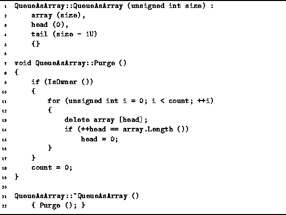

Data Structures and Algorithms
with Object-Oriented Design Patterns in C++
Data Structures and Algorithms
with Object-Oriented Design Patterns in C++
The definitions of the QueueAsArray class constructor
and destructor are given in Program  .
The constructor takes a single parameter, size,
which specifies the maximum number of items that can be stored in the queue.
The constructor initializes the member variables as follows:
The variable array is initialized to an array of length size
and the remaining variables, head and tail,
are initialized to represent the empty queue.
Therefore, the total running time for the QueueAsArray
constructor is O(1).
.
The constructor takes a single parameter, size,
which specifies the maximum number of items that can be stored in the queue.
The constructor initializes the member variables as follows:
The variable array is initialized to an array of length size
and the remaining variables, head and tail,
are initialized to represent the empty queue.
Therefore, the total running time for the QueueAsArray
constructor is O(1).

Program: QueueAsArray Class Constructor, Destructor and Purge Member Function Definitions
The QueueAsArray destructor
simply calls the Purge member function.
The Purge function is responsible for
deleting the contained objects if the queue (as a container)
is the owner of those objects.
If the queue owns the contained objects,
the Purge function deletes them all one-by-one,
starting from at the head and moving toward the tail.
Because we cannot know the types of the objects contained,
we cannot know the running time required to delete each of them.
However, if we assume that the destructors for all the objects
each run in constant time,
the total running time for the QueueAsArray class
Purge function is O(n),
where  ,
i.e., n is the number of items in the queue.
,
i.e., n is the number of items in the queue.
 Copyright © 1997 by Bruno R. Preiss, P.Eng. All rights reserved.
Copyright © 1997 by Bruno R. Preiss, P.Eng. All rights reserved.